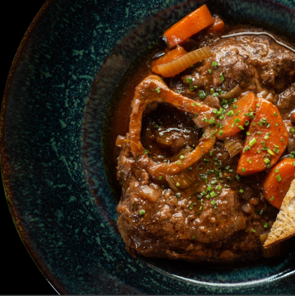

Ossobuco alla toscana

Ossobuco, a sliced veal shank, is one of the typical cuts of the Italian cucina povera, cheap but highly rewarding and satisfying if treated with care.
The most famous ossobuco recipe comes from Milan.
They braise the ossobuco in bianco, without tomato sauce, with onions, white wine, and beef stock, and serve it sprinkled with gremolata, a condiment made of finely minced lemon zest,
garlic, and parsley, with saffron risotto. Although today, we will be doing the Fiorentina version.
Serves two people
-
2 veal shanks, about 300 g /10 oz each
- 2 tablespoons flour
- 1 golden onion
- 1 carrot
- 1 celery stalk
- extra virgin olive oil
- 1 glass dry white wine
- 1 cup dry white wine
- 2 cups lukewarm water
- 400 g peeled tomatoes
- Salt
- Fresh thyme
- Remove the skin around the veal shanks and pound the meat to soften it.
Lightly flour the veal shanks.
Thinly slice the onion and dice the carrot and the celery.
- Choose a large frying pan where the two veal shanks can comfortably fit.
Pour a few tablespoons of extra virgin olive oil into the pan, heat it up,
and then fry the veal shanks for 5 minutes on each side, or until golden brown.
- Move the veal shanks to a plate, pour two more tablespoons of olive oil into the pan
and add the finely sliced onion and diced celery and carrot.
- Sauté the onion, the celery, and carrot over a low heat.
- When the onion is soft, and the other vegetables are nicely browned, add the veal shanks.
Pour the dry white wine and reduce it. It will take about 10 minutes.
- Add the peeled tomatoes, crushed by hand, and the warm water.
- Adjust the salt - do not overdo it because the cooking liquid will
reduce, and the veal shanks may then be too salty.
- Cook the veal shanks over a low heat for about an hour and a half.
Check from time to time to prevent them from sticking.
If the sauce is reducing too quickly, add more hot water.
- Sprinkle the veal shanks with fresh thyme, and serve them with toasted bread, on which you can spread the marrow.
- Buon appetito!
Back to Today's Menu
all rights goes to Jul's kitchen